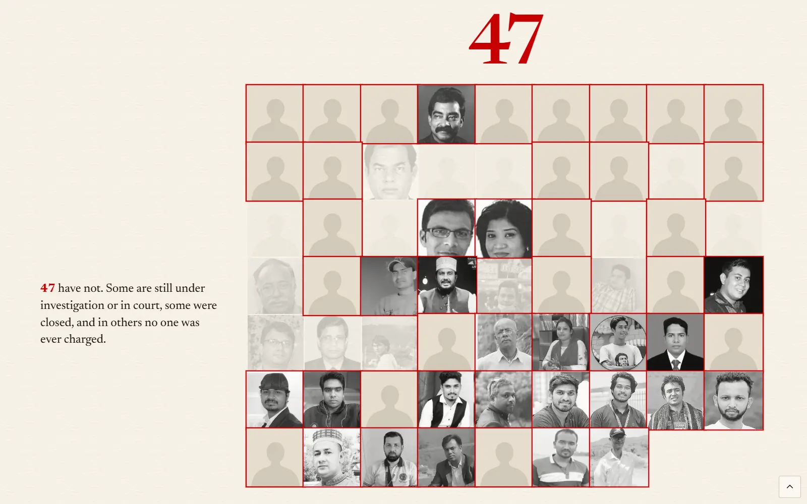
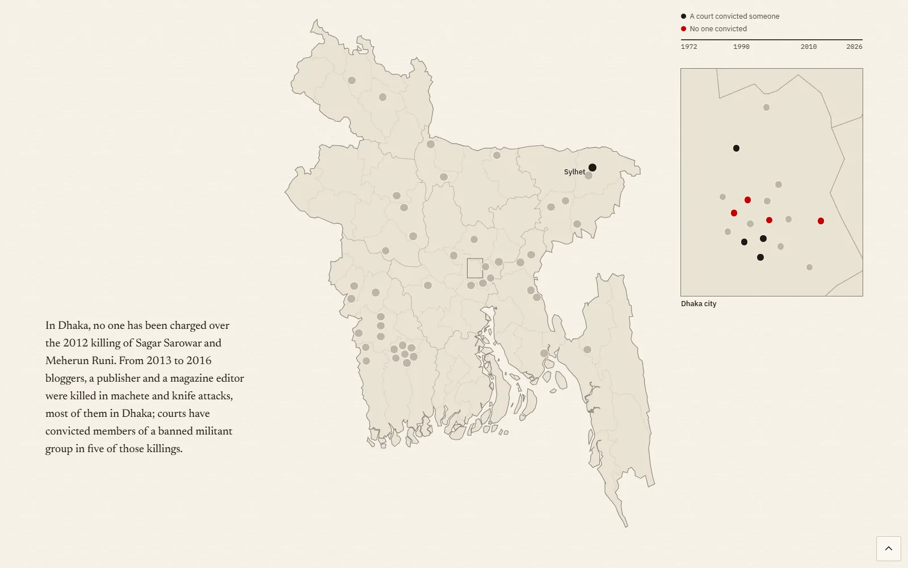
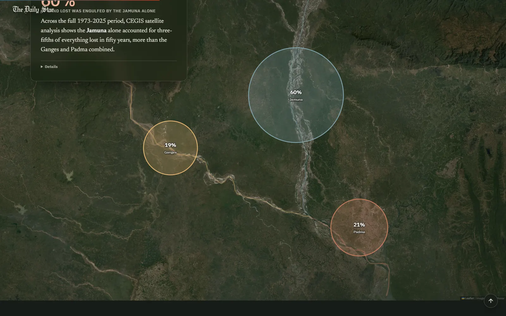
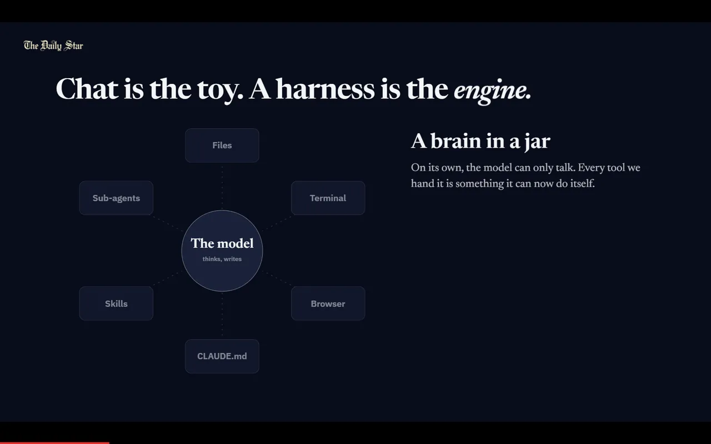
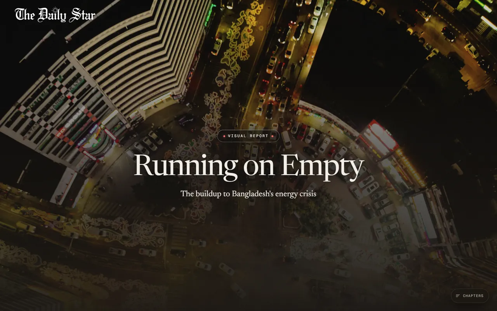
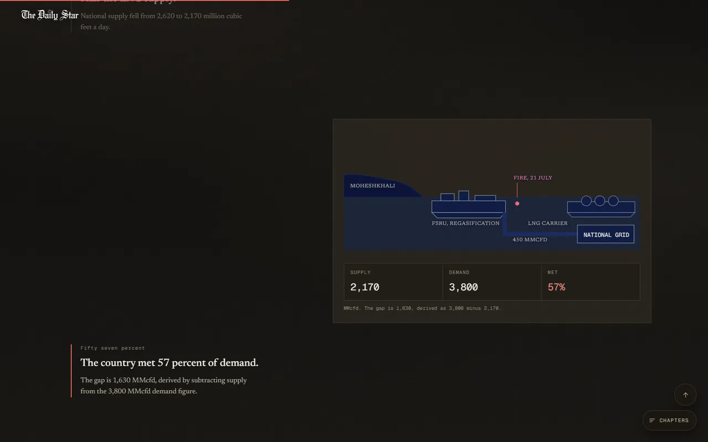
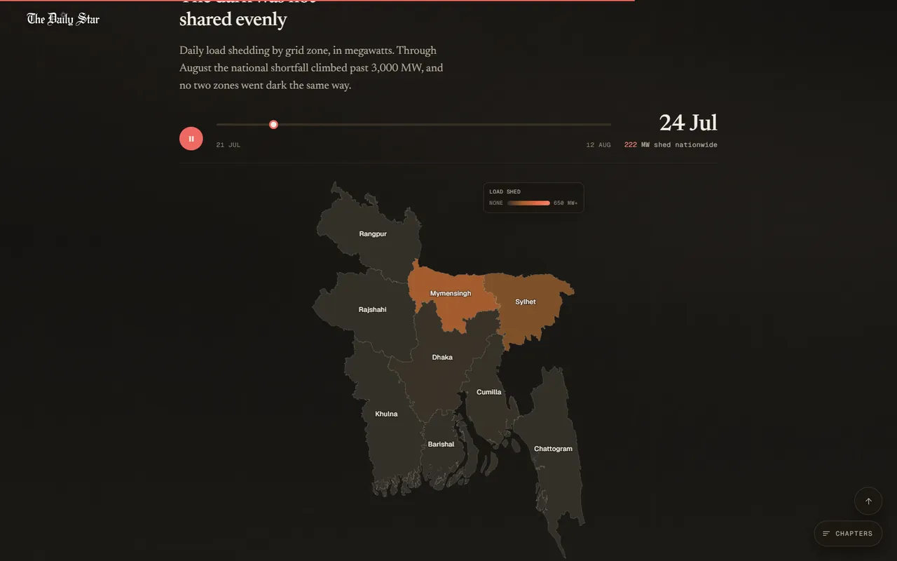

↑
Generating a page…
WHERE IS THE
HOUSE STYLE?!
Same AI.
A different engine.
Every story is code underneath



0
lines of HTML, CSS and JavaScript in the Journalists story
- HTML 931
- CSS 1,193
- JavaScript 1,341
Plus 1,593 lines of build and QA scripts.
Same AI. Now give it hands.
HarnessThe program wrapped around the AI. It hands it tools and lets it work in a loop until the job is done.
Chat in a browserclaude.ai, ChatGPT, Google AI Studio
Mir's copy-pastes 0
In a harnessClaude Code, Antigravity, Codex
Mir's copy-pastes 0
Same brain. The harness lets it act, check, and try again.
Then it builds, and checks its own work
Agentic loopPlan, act, check, fix, repeat. No human in between.
CLAUDE.md · written by MirBig jobs: agree the plan before code. Never deploy or push without asking.
Mir never reads the code. He reads these.
.md fileA plain-text note. The one thing the human and the AI both read.
CLAUDE.mdThe rules. Read before every session.
BRIEF.mdThe plan. Agreed before any code.
HANDOVER.mdWhere we stopped. What is left.
review/*.mdWhat the checkers found.
summary.md 5 lines
Reading notes is tiring. It is still cheaper than reading 3,465 lines of code.
Big jobs need a lead, and a plan first
Sub-agentA fresh helper with its own memory. One job, then a short report.
Plan: who does what
Example breakdown, River Erosion✓ plan approved
Haikuliteral, repetitive
Sonnetbuilding, QA, debugging
Opus, the leaddesign, hard calls
Their mess stays in their memory. The lead gets 25 lines.
Don't let the builder grade its own homework
The builder says"Done. Everything checked and working."
NOT QUITE
26 claims to check
- A rule contradicted the code. "Hero text never fades", but the code fades the headline.
- Budgets that would have failed the two best stories.
- The biggest memory cost was missed by both earlier reviewers.
A report is a claim. Look at the screenshots.
It argues back. Good.
Claude0:0Mir
I do not agree to be polite. He does not trust me to be right. That is the system.
Agents are disposable. Their notes are not.
Sub-agent's memory not started
report.md · 25 lines · handed to the lead
The agent is replaceable because the state is in the file.
Context is working memory, and it rots
ContextEverything the AI has read this session, counted in tokens. A token is about ¾ of a word.
Read a very long report while juggling five tasks and you forget paragraph three. For a person, a slip. For an AI building a production page, fatal.
Each square is 10K tokens. The window holds 1M. Outlined: my 400K line.
0
What it was told at the start
- Reporter's text verbatim
- Never invent a figure
- Logo top-left over the hero
- One accent colour
- Test down to 320 px
- Nothing loaded from outside
- Old phones must work
- Never publish without asking
Too late to take notes now
So its memory lives in files
The model is not the bottleneck. Know-how is.
- Right-size the workerOpus leads. Sonnet builds. Haiku does the literal work.
- Keep the memory smallFresh session at 400K. Sub-agents take the mess. Notes go in files.
- Keep the cache warmOne word before minute 54.
One word at minute 54 saves the hour
CacheThe AI's bookmark. For one hour after your last message, it keeps what it has already read.
400K tokensThis whole session: about 300,000 words, sent again with every message.
0minutes since Mir's last message
What one message costs
Sent at minute 54, cache warm
Sent at minute 61, cache cold
Like tea in a flask. Lid on: hot all hour. Lid off: you boil the kettle again.
Not my trick. It is how the labs build.
An agent is a model using tools in a loop, steering its own work.
Anthropic, "Building effective agents"You saw it: the loopA lead agent plans, then hands the work to sub-agents running in parallel.
Anthropic, "How we built our multi-agent research system", June 2025You saw it: the lead and its helpersContext is a finite resource. Spend it with care.
Anthropic, "Effective context engineering for AI agents"You saw it: the 400K lineEvery new session starts with no memory. A progress file bridges the gap.
Anthropic, "Effective harnesses for long-running agents", November 2025You saw it: HANDOVER.md
The industry is moving to agentic loops. This is the craft to learn.
Same prompt. One had the Skill.
One-line prompt, no SkillWith the Skill · live page
Without
- Template look
- Big-number box, dot-grid decoration
- Fonts and charts from outside servers
- Never tested on a phone
With the Skill
- Logo top-left, house type
- One signature visual
- Self-hosted, built for old phones
- Rules and QA from the first draft
SKILL.md, 59 lines. Six hard rules, the house defaults, an eight-step workflow.
17 reference files, opened only when a step needs them.
brief.mdsignature.mdcharts.mdmotion.mdeditorial.mdanti-slop.mdqa.mdevaluator.mdrounds.md+ 8 more
Its first rule: the reporting is the content.
After every story, the Skill learns
Publishthe story goes live
People reactthe desk, the bosses, readers
Mir askswhat was new? why? will it help again?
Skill updatedthe next story starts smarter
SKILL.md what this story taught us
Every scroll, a new finding. Nobody scrolls for nothing.
You don't need to code to do this
ReportersBring the story and the dataThe AI never invents a figure. Yours is the only source.
EditorsBe the reviewerFresh eyes are the guardrail. That's already your job.
DesignersWrite the SkillYour taste, written down once, used on every story.
DevelopersRun the harnessOrchestrate, verify, publish.
Skillhouse rules
Briefagreed before code
LeadOpus plans
Sub-agentsSonnet, Haiku build
Reviewerfresh eyes
Handoverzero amnesia
Nobody in this pipeline writes code by hand.
So. What do you want to build?
An idea. Nobody has built it yet.
You are bounded only by your imagination.
This deck was built the same way
This deck: lines of code. Mir wrote none of them.

Version one: text on slides.The bottleneck was never the code. It was the idea.
Even a pile of numbers can be a story
- Gas fields run down
- Imports fill the gap
- Two floating terminals carry it all
- Hormuz closes. Qatar halves deliveries
- 21 July: a fire knocks out one terminal
- The country meets 57% of demand
- Factories slow. The lights go out



The engine is new. The craft is not: make them ask “okay, what’s next?”
context 0K/ 1M